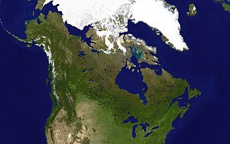

Canada este un stat situat în extremitatea nordică a continentului american. Este a doua țară a lumii ca întindere după Rusia, cu 9.984.670 km², teritoriul său fiind organizat asemenea unui stat federal, în zece provincii și trei teritorii. Este mărginită la est de Oceanul Atlantic, la nord de Oceanul Arctic, iar la vest de Oceanul Pacific. La sud, se învecinează cu Statele Unite ale Americii.
Populată la început în mod exclusiv de populație amerindiană și inuit, Canada a fost fondată sub forma unei uniuni de colonii britanice, unele dintre ele transformate din foste colonii franceze. Ca formă de organizare statală, Canada este o monarhie constituțională, și până în 1931, era considerat un dominion al Regatului Unit. Însă, Canada și-a obținut independența de Marea Britanie în mod pașnic, printr-un proces gradual început cu întemeierea Canadei în 1867 și definitivat în 1982, când Canada a obținut dreptul de a-și modifica propria constituție. Cele mai importante trei acte normative care au consolidat independența sunt:
Pădurile boreale domină întinderea țării, ghețarii sunt predominanți în regiunea arctică și în Munții Stâncoși, în timp ce terenul relativ plat al preriilor este propice pentru agricultură. Marile Lacuri alimentează Fluviul Sfântul Laurențiu (St. Lawrence) (în sud-est) o zonă care găzduiește o mare parte din populația Canadei.
Canada ocupă partea nordică a Americii de Nord. Are o graniță comună la sud cu cele 48 de state adiacente ale SUA și la nordvest cu Alaska, întinzându-se de la Oceanul Atlantic în est la Oceanul Pacific în vest; la nord se găsește Oceanul Arctic. Din 1925, Canada are pretenții asupra teritoriilor arctice dintre 60° și 141° longitudine vestică, deși aceste pretenții nu sunt universal recunoscute. Cea mai nordică așezare umană din Canada (și din lume) este Baza forțelor militare canadiene CFS Alert localizată pe vârful nordic al Insulei Ellesmere - latitudine 82.5°N - la doar 834 kilometri (450 mile nautice) de Polul Nord. După suprafață teritorială, Canada este a doua țară din lume, după Rusia.
Densitatea populației de 3,5 locuitori pe kilometrul pătrat este una dintre cele mai scăzute din lume. Cea mai dens populată parte a țării este Coridorul Québec City-Windsor în sud-est. La nordul aceste regiuni se găsește vastul Scut Canadian, o zonă stâncoasă erodată de-a lungul ultimei glaciațiuni, cu soluri sărace, dar bogată în minerale, cu lacuri și cursuri de apă abundente. De fapt, teritoriul Canadei încorporează peste 60% din lacurile planetei.
Temperaturile medii în Canada depind de locație. Iernile pot fi aspre în multe zone ale țării, mai ales în preerii, unde temperatura medie zilnică este sub −15 °C. Excepția este British Columbia, care se bucură de un climat temperat, cu ierni ușoare și ploioase. Media temperaturilor maxime în timpul verii pe coastele estică și vestică este între 21 și 24 °C.
Flora nordului canadian devine din ce în ce mai rarefiată de la păduri de conifere la tundră și, în final, pământuri lipsite de vegetație în nordul extrem. Nordul continental este încercuit de un vast arhipelag încorporând unele dintre cele mai mari insule din lume.
Ottawa este capitala Canadei și reședința parlamentului federal canadian, port pe dreapta râului omonim și pe canalul Rideau, zona metropolitană având o populație de 1.168.788 locuitori (2006).
Orașul este situat în estul provinciei Ontario, la granița cu provincia Québec. Ottawa nu este o metropolă la fel de mare ca Montreal sau Toronto. Din punct de vedere al numărului de locuitori, aceasta se situează în urma altor orașe canadiene, precum Vancouver sau Calgary. Ea formează împreună cu Carleton o singură aglomerație urbană, a patra ca mărime din Canada, numărând peste un milion de locuitori. În Ottawa, doar un sfert din populație este francofonă. Aici supremația limbii engleze este de netăgăduit.
Cascada Niagara este un ansamblu format din trei căderi de apă situate la granița dintre statul nord american New York din SUA și provincia Ontario din Canada. Cascada americană (American Falls) si Cascada vălul miresii (Bridal Veil Falls) pe teritoriul Statelor Unite și Cascada potcoavă (Horseshoe Falls) pe teritoriul Canadei.
Lacul Erie este legat cu lacul Ontario prin râul Niagara cu o diferență de nivel de 58 m, cursul apei fiind despărțit în două brațe de Insula Caprei (Goat Island). Pe partea nord americană cascada are o lățime de 363 m, apele cascadei cad de la 21 m înălțime, iar pe partea canadiană cascada are o lățime de 792 m (în formă de potcoavă), înălțimea căderii de apă fiind 51 m. Debitul de apă fiind între 2.832 și 5.720 m³/s, în medie 4.200 m³/s.
Din anul 1800 este această regiune deschisă turismului. In 1885 declară statul nord american New York, Cascada Niagara ca parc național, peste un an această pildă o urmează Canada. Această cascadă este una dintre cele mai importante atracții turistice din America de Nord.
Sirop de arțar este o soluție dulce natural, format din apa (seva) de arțar colectate în primăvara devreme și concentrat prin fierbere. Calitatea siropului de arțar a produs modificări pe măsură ce sezonul progresează, de la un sirop auriu cu gust delicat la un sirop foarte întunecat cu un gust puternic. Studiile arată că această schimbare a calității se datorează cantității de bacterii care crește în timpul sezonului.
Siropul de arțar este fabricat în pădurile din nord-estul Americii de Nord, în special în Quebec (trei sferturi din producția mondială și 95% din producția canadiană).Metoda transformării apei de arțar în sirop era deja cunoscută și stăpânită de populațiile native din Canada când au sosit europenii. A fost folosit în special ca hrană tonică în primăvară. Multe legende ale nativilor americani au sirop de arțar.
Astăzi, consumul de sirop de arțar este răspândit în Quebec și Ontario, unde siropul este uneori consumat zilnic, vândându-se la un preț relativ mic. Siropul de arțar este, de asemenea, popular în țări precum Japonia și Germania ca un aliment rar exotic. În Canada și Statele Unite, siropul poate fi înlocuit cu „sirop de masă” la prețuri mai mici, care conține sirop de porumb și arome artificiale. În Quebec, siropul de porumb sau orice alt tip de sirop dulce considerat a fi inferior siropului de arțar se numește peiorativ „post sirop”.